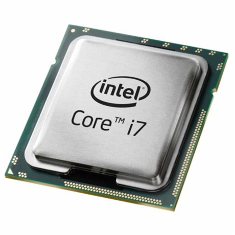
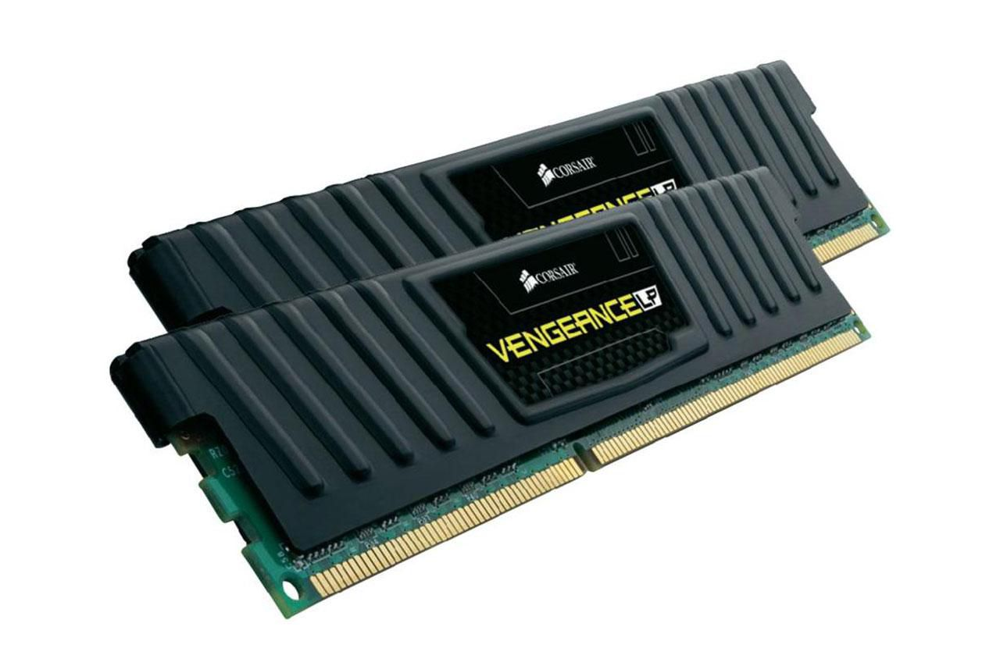

You may be wondering, what kind of hardware do I need to build a computer?
A video will be provided at the bottom of the screen.
A CPU is the electonic circuitry witin a computer that caries out the instructions of a computer program by performing the basic arithmetic, logical, control an input/output (I/O) operations specified by the instructions.

Some facts about CPU:
A motherboard (sometimes alternatively known as tthe mainboard, system board, baseboard, planar board or logic board, or colloquially, a mobo) is the main printed circuit board (PCB) found in gerneral purpose microcomputers and other expandable systmes. It holds and allows communication between many of the crucial electronic components of a system, such as the central processing unit (CPU) and memory, and provides connectors for other peripherals.
Here are some components that the motherboard contains:
| Component | Function/Characteristics |
|---|---|
| Processor interface |
Current motherboards have a socket that accepts the processor. |
| Memory Modules |
The motherboard contains slots for different types of memory. |
| Expansion Slots |
Expansion slots allow you to add features to your computer by inserting expansion cards into the available slots. There are a number of different standard expansion slots including: Industry Standard Architecture (ISA), Peripgeral Component Interconnect (PCI) and Accelerated Graphics Port (AGP). |
| Onboard Components |
Many motherboards include onboard devices (such as network cards, audio cards, video cards, or USB and Firewire connections). Selecting a motherboard with onboard devices is typically cheaperr than buying seperate expansion cards for each feature. |
| Onboard Internal Connectors |
There are a number of connectors for components such as power supply, fans, and LED lights. In addition, many motherboards provide additional ports, such as USB or Infrared, by attaching adapter cards to the motherboard connectors (also call headers. These connectors are often labeled on the surface of the motherboard. |
| BIOS Chip | The BIOS chip is firmware (hardware hard-coded with software) attached to the motherboard and is essential in booting the computer. |
| CMOS Battery | The CMOS battery supplies power to the CMOS to retain system settings used by the BIOS during system boot. |
| Chipset | The chipset is a group of chips that facilitate communication between the processor, memory components, and peripheral devices. The chipset controls the bus speed and alo power management features. Chipsets are usually attached to the motherboard and are non-upgradeable. |
| Jumpers | Jumpers are e;ectrical connection points that can be set to control devices and functions attached to the motherboard. |
| Documentation | When selecting and working with motherboards, a good place for information is the motherboard documentation. Most motherboard documentation includes a diagram of the motherbaoard that indentifies the components list above details any jumper settings. If you are missing the motherboard documentation, check the manufacturer's Web site. |
Random-access memory(RAM), is a form of computer data storage that stores data and maching code currently being used.

Here are some facts about RAM:
A graphics processing unit (GPU) is a specialized electronic circuit designed to rapidly manipulate and alter memory to accelerate the creation of images in a frame buffer intenderd for output to a display device.

If you would like to watch a video on the history of GPUs, click here or the picture above!
A computer case or also known as a computer chassis, tower,system unit, cabinet, base unit, or simply case, is the enclosure that contains most of the components of a computer (usually excluding the display, keyboard and mouse.)

These are some names of the different sized computer cases:
A hard disk drive (HDD), hard disk, hard drive, or fixed disk is a data storage device that uses magnetic storage to store and retrieve digital infroamtion using one or more rigid rapidly rotating disks (platters) coated with magnetic material.

A power supply is an electrical device that supplies electric power to an electrical load. The primary function of a power supply is to convert electric current from a source to the correct voltage, current, and frequency to power the load.